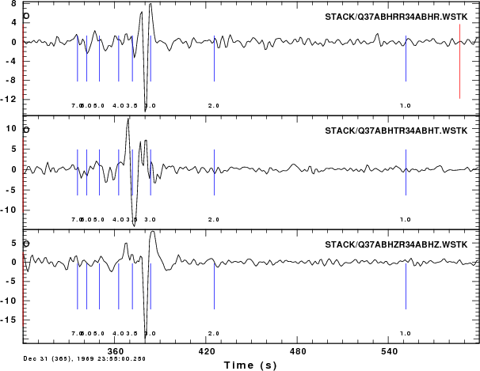

Introduction
At the request of one user, this tutorial provides current scripts on
the cross correlation of gound noise for the purpose of determining an
interstation Green's function.
The complete package is contained in the archive noise.tgz
which is 46 megabytes in size.
Contents:
Unpack the archive with the command
gunzip -c noise.tgz | tar xvf -
This will create the directory structure as follows:
NOISE
|-- DATA
| `-- 2010
| |-- 245
| | |-- Q37ABHE
| | |-- Q37ABHN
| | |-- Q37ABHZ
| | |-- R34ABHE
| | |-- R34ABHN
| | `-- R34ABHZ
| |-- 246
| |-- 247
| |-- 248
| |-- 249
| |-- 250
| |-- 251
| |-- 252
| |-- 253
| |-- 254
| |-- 255
| |-- 256
| |-- 257
| |-- 258
| |-- 259
| |-- 260
| |-- 261
| |-- 262
| |-- 263
| |-- 264
| |-- 265
| |-- 266
| |-- 267
| `-- 268
| |-- Q37ABHE
| |-- Q37ABHN
| |-- Q37ABHZ
| |-- R34ABHE
| |-- R34ABHN
| `-- R34ABHZ
|-- DOCLEANUP
|-- DOCONVERT
|-- DOCORR
|-- DOITALL
|-- DOSTACK
`-- bin
`-- DOPAIRDIST
This data set consists of 24 days of the Transportable Array stations
Q37A and R34A together with processin scripts.
After modifying the scripts (see the discussion in the next section),
the scripts are run in the following order:
After the run there will be two new directories created: CROSS and STACK. The directory CROSS contains the cross-correlations for each day, e.g.,
CROSS/2010/268:
2010.268.Q37ABHRR34ABHR.cor 2010.268.Q37ABHTR34ABHT.rev
2010.268.Q37ABHRR34ABHR.rev 2010.268.Q37ABHZR34ABHZ.cor
2010.268.Q37ABHTR34ABHT.cor 2010.268.Q37ABHZR34ABHZ.rev
and the directory STACK will contain
Q37ABHRR34ABHR.WSTK Q37ABHTR34ABHT.WSTK Q37ABHZR34ABHZ.WSTK
A plot of the 24 day stack of the cross-corelation (.cor) and reversed
cross-correlation (.rev) is performed using the gsac commands
GSAC> r STACK/*
GSAC> xlim o o 300
GSAC> markt on
GSAC> p

The markt command indicates
the group velocity. As can bee seen the Rayleigh wave is well developed
on the R and Z components and the Love wave is well defined on the T
component of the 24 day stack.
The group velocities are picked using the interactive program do_mft (which calls the program sacmft96 to do the processing). The
plots resulting from sacmft96 are
as follow:
Scripts
Read the scripts carefully. If necessary purchase a book on BASH shell
programming.
DOCONVERT - This script uses
the Computer Programs in Seismology saccvt
to ensure that the Sac files are in the proper binary format for
you computer. If you create the Sac files on your computer, you will
not require this
DOITALL - this script
processes all data for the current year.
DOCORR - this script performs
the cross-correlation, creates the directory CROSS, CROSS/YEAR and
CROSS/YEAR/DAY
THIS
SCRIPT MUST BE EDITED BEFORE YOU APPLY THIS TO YOUR DATA SETS. You
must change the FREQLIMITS=, NPTSMIN and BASE entries for the following
reason: to keep the size of this example small (and at 46
megabytes it is not small), I resamples the BH data to 1
sample/percond. This means that there is no signal at frequenices
greater than 0.5 Hz, thus you must chang ehte FREQLIMTS parameter
NPTSMIN is used to check that I have approximately one day of data. At
1 sample per second, I there are 86400 seconds per day. Since I am
getting these data from an archive, I will permit the data so start
later than 0000 and to end before 235959. If you use 10 sample per
second data, then this parameter should be TEN times larger.
BASE points to the location of the DATA files, e..g, ${BASE}/DATA has
the entries above.
Note that the current code assumes that the files are BH (CMPZ, OCOMP
and COMP parameters)
DOSTACK - this script stacks
the cross-correlations and places them in the subdirectory STACK
Caution
Once you get the empirical Green's functions, you must then decide what
the dispersion actually is. This requires practice since you must
select a Gaussian filter parameter. I recommend starting with a
reasonable estimate of the velocity model, making synthetics for
the distances expected, and then selecting a Gaussial filter parmaeter
(alpha) than best reproduces the known group velocities from the
synthetic computations (modifiy the Surface-Wave
Synthetics and Group
Velocity Determination tutorial)
This exercise will also assist you in defining the period range that
you can believe. You can only believe the long period estimates when
you are are large distances.